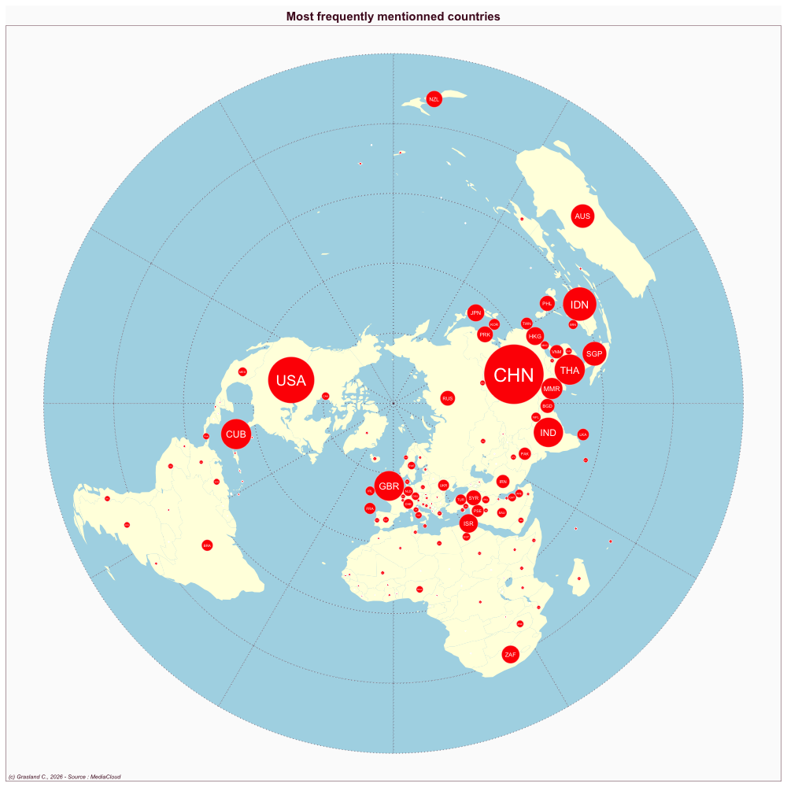

Malaysia
- Website : Malaysiakini
Scale
- Global
- National
Topics
- General news
- Political news
- Economic news
Publications
Chin J. 2003. Malaysiakini. Com and its impact on journalism and politics in malaysia. In Asia. ComRoutledge; 147–160.